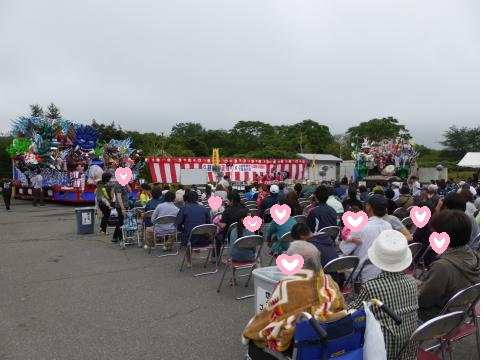

「今年もよろしくお願いします」という気持ちを込めて職員が踊ったり出し物を披露。それを見ながらティータイムを楽しみます。
年男・年女の職員またはノリのいい職員が鬼役になり利用者に向かってきます。利用者は豆ではなくお手玉をぶつけて退治します。
お内裏様とお雛様のモデルに利用者が着物を着せて化粧をしてみんなにご披露します。前の施設長の脚本でひな祭りの劇をやったこともあります。
桜や花壇の花が咲いたころ、外の気温や天気を見て、数人ずつではありますが散歩に出かけます。外の空気はいいな～と利用者もリフレッシュされます。
施設の前で馬っこが休憩するので外に出て見学します。小雨など天気があまり良くないときは職員によるチャグチャグ馬っこの踊り披露があります。
短冊に願い事を書いて飾り付けます。七夕に書道をすると字がうまくなるという言い伝えがあるので書道をする時もあれば、飾りは事前にやっておいてレクリエーションをするときもあります。
気温が高すぎるときや雨の時は室内で行いますが、焼きそばやフランクフルトなど屋台メニューを食べてジュースを飲んで、さんさ踊りを見てお祭り気分になっていただきます。

年男・年女・長寿祝いをします。職員による踊りのときもありますが、カラオケ大会のときもあります。普段おとなしい利用者もつられて歌ってくれます。
鉢巻きでチーム分けをして玉入れや風船バレーが続いた数などで競いますが、毎年競技は変わります。もちろん職員による綱引きもあります。
利用者が作った作品を展示します。施設内の壁には春夏秋冬を感じるように飾りを職員が作ります。花の折り紙をつくり季節を追うように順番に貼ったりと毎年テーマを決め工夫して作っています。

サンタクロースやトナカイの格好をした職員とクリスマスリース作りを行ったり、職員による出し物を見ながらお菓子とジュースで今年もお疲れさまでしたという気持ちで忘年会をしたりします。